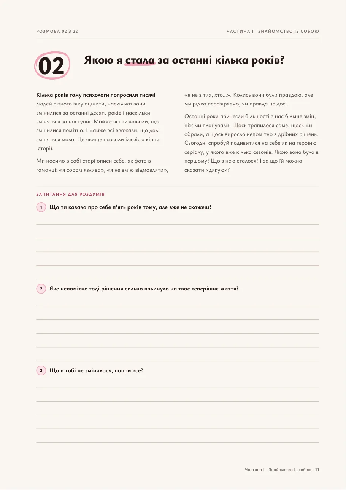
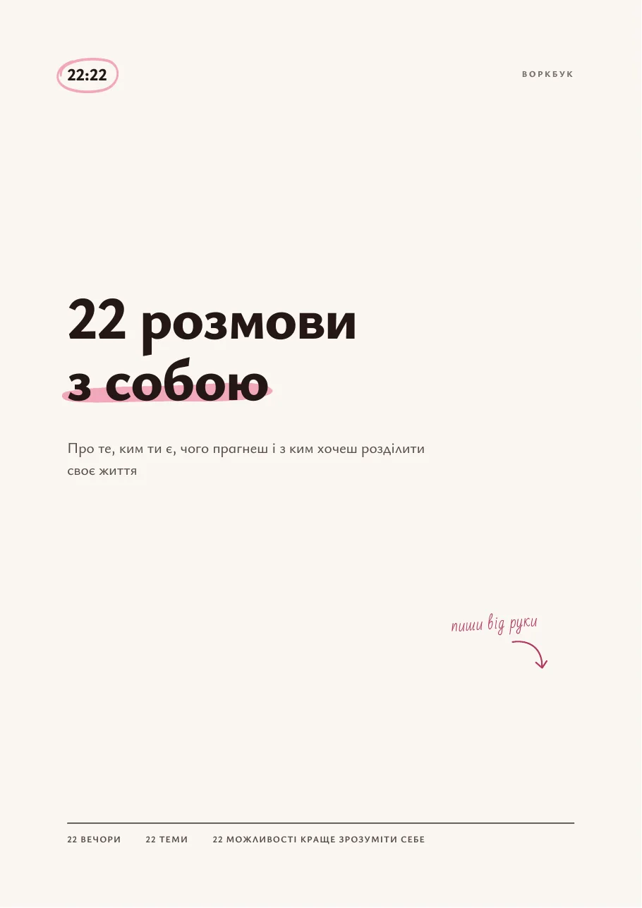
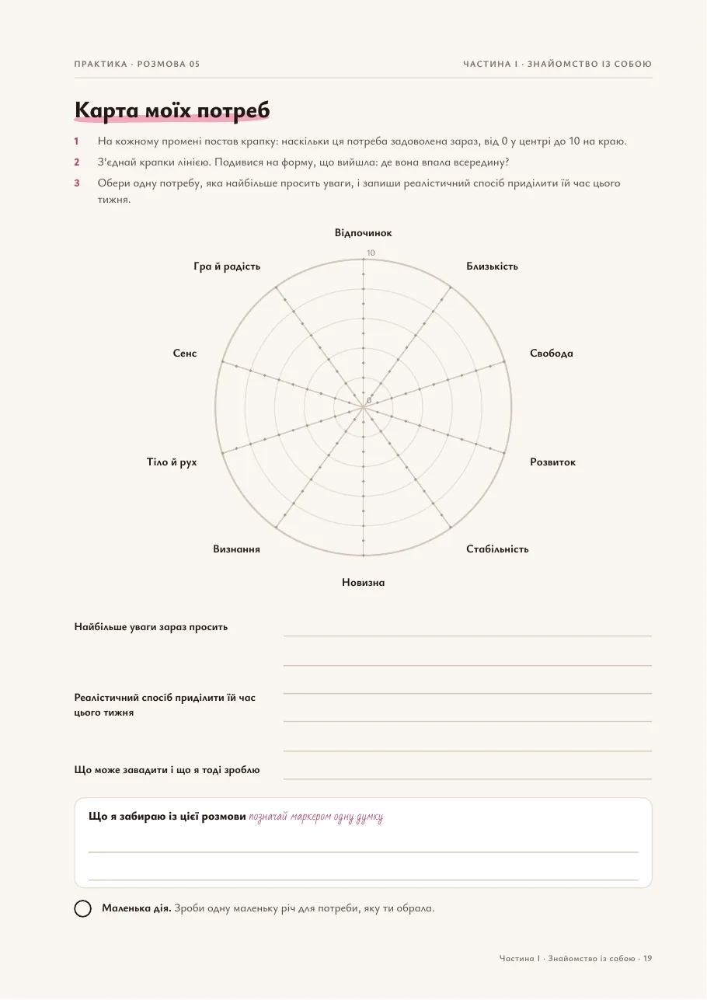
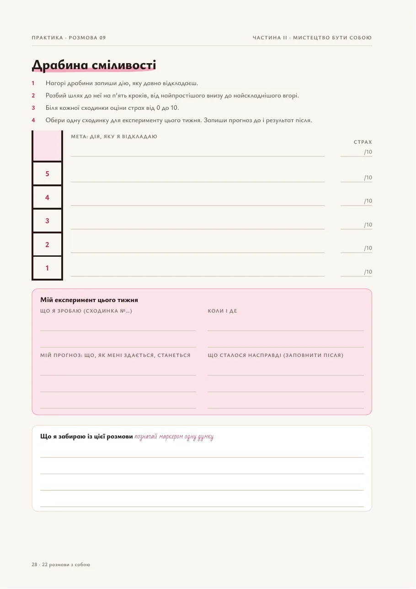
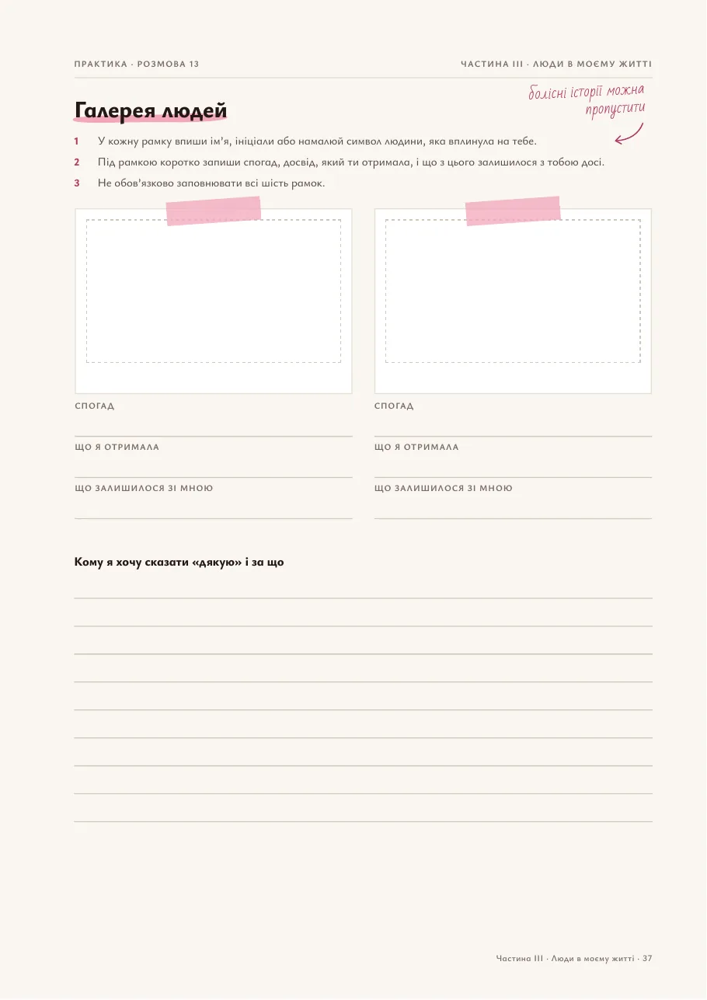

22 розмови
з собою
Про те, ким ти є, чого прагнеш і з ким хочеш розділити своє життя. 22 вечори з короткими есе, запитаннями й практиками, які хочеться заповнювати від руки.
- 63 сторінки A4
- кольорова версія
- версія для домашнього друку


Привіт.
Майже кожна з нас у якийсь момент помічає, що коло близьких людей стало вужчим, ніж хотілося б. Після переїзду, нової роботи, розставання чи просто тому, що життя змінило ритм. І майже кожна думає, що з нею щось не так, хоча насправді змінилися обставини.
Шукати своїх людей простіше, коли знаєш, хто ти зараз і чого хочеш. Тому тут двадцять дві розмови. Спершу з собою: про ролі, бажання, потреби і самоповагу. Потім про людей, які вже є у твоєму житті, і про тих, хто ще може з’явитися.
Тут немає правильних відповідей, оцінок і обіцянок змінити життя за три тижні. Є запитання, над якими цікаво подумати, вправи, які допомагають побачити звичне під новим кутом, і багато місця, щоб писати.
Що всередині
П’ять частин, які ведуть від знайомства із собою до сміливості зближуватися з іншими. Кожен вечір займає дві сторінки: коротке есе з запитаннями і практика.
Знайомство із собою
- 01 Хто я, коли мене ніхто не бачить?
- 02 Якою я стала за останні кілька років?
- 03 Чиє життя я намагаюся прожити?
- 04 Що робить мене мною?
- 05 Чого мені зараз насправді не вистачає?
Мистецтво бути собою
- 06 За що я себе поважаю?
- 07 Коли я востаннє обирала себе?
- 08 Чого я боюся, коли мене бачать справжньою?
- 09 Що б я зробила, якби не боялася виглядати безглуздо?
- 10 Чи вмію я бути собі хорошою компанією?
Люди в моєму житті
- 11 Кого я називаю своєю людиною?
- 12 Якою подругою є я?
- 13 Які люди залишили в мені слід?
- 14 Що для мене означає бути почутою?
- 15 Де проходять мої межі у дружбі?
Сміливість зближуватися
- 16 Чому з віком стає складніше знайомитися?
- 17 Що я втрачаю, коли чекаю першого кроку від інших?
- 18 Чи дозволяю я людям бути не такими, як очікувала?
- 19 Як із незнайомки народжується подруга?
Життя, яке хочеться розділити
- 20 Які моменти я хочу прожити разом із кимось?
- 21 Яке місце я хочу залишити для нових людей?
- 22 Який крок я готова зробити назустріч своєму життю?
- Початкова рефлексія «Де я зараз?»
- Фінальна рефлексія, щоб порівняти, що змінилося
- Лист собі в майбутнє
- Маленькі необов’язкові дії для реального життя
Як виглядають сторінки
Двадцять дві різні практики: карти, шкали, таблиці, драбина сміливості, галерея людей, меню вечора наодинці з собою. І справжнє місце для письма, а не два рядки.



Як це працює
Купуєш
І отримуєш дві PDF-версії: кольорову і для домашнього друку з мінімумом чорнила.
Друкуєш
A4, двосторонній друк. Можна скріпити, віддати в копіцентр на брошурування або заповнювати на планшеті.
Береш ручку
І рожевий маркер, якщо є. Одна розмова займає від 20 до 40 хвилин.
У своєму темпі
22 вечори є рекомендацією, а не графіком. Щодня, раз на тиждень або коли захочеться.
Купуючи воркбук, ти підтримуєш 22:22
22:22 є застосунком, де жінки знайомляться, щоб дружити. Без стрічки профілів і свайпів: щовечора о 22:22 тобі може прийти одне знайомство з жінкою, з якою у вас багато спільного. Кожна покупка допомагає нам розвивати його далі.
Оплата карткою, Apple Pay або Google Pay
Запитання
Що саме я отримаю?+
Два PDF-файли по 63 сторінки A4. Кольорова версія для екрана й кольорового друку і версія для домашнього принтера з мінімальною витратою чорнила.
Обов’язково друкувати?+
Ні. Воркбук задуманий для письма від руки, але його можна заповнювати й на планшеті в будь-якому застосунку, що вміє писати поверх PDF.
Це психотерапія?+
Ні. Це рефлексивні вправи, натхненні практиками самоспівчуття, роботи з цінностями та межами. Вони не замінюють роботу з фахівцем. Якщо тобі зараз дуже важко, найкраща турбота про себе: звернутися до психолога чи психотерапевта.
Скільки часу це займає?+
Одна розмова займає від 20 до 40 хвилин. Можна проходити щовечора, раз на тиждень або повертатися, коли захочеться.
Можна подарувати подрузі?+
Так, але, будь ласка, купи для неї окремий примірник. Так ти підтримуєш 22:22 удвічі.
Щось не вийшло з оплатою чи файлом?+
Напиши нам на support@twentytwo22.app, і ми допоможемо.